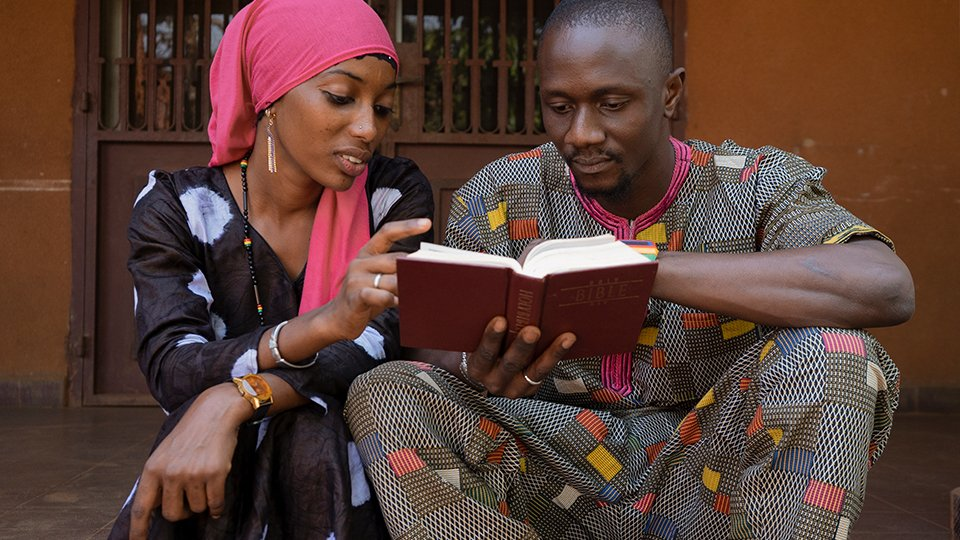

Global Missions
Partnering with God's work among the nations — in West Africa and beyond — through prayer, giving, and sending.
Sent to the Unreached
Since 1887, the Christian & Missionary Alliance has maintained a distinctive passion for reaching the world's most neglected and unreached peoples with the gospel of Jesus Christ.
At Orrville C&MA, that vision is our own. We believe the Great Commission is not optional — it is the calling of every believer and every local church to participate in God's global mission.
We participate through prayer, financial giving through the Great Commission Fund, and our Annual Missions Conference — where we celebrate what God is doing around the world.
Missions Conference Get Involved
Ways to Participate
Pray
Intercede regularly for our supported International Workers, unreached people groups, and the C&MA's global work.
Give
Support the Great Commission Fund and our church's missions giving, which funds International Workers around the world.
Go
Consider short-term mission trips or explore long-term service as an International Worker through the C&MA.

International Workers in West Africa
Orrville C&MA has a special heart for and relationship with International Workers serving in West Africa — one of the world's most spiritually needy regions, with millions of people who have never heard the name of Jesus.
Our recently retired Senior Pastor's personal passion for this region continues to energize our entire congregation to pray, give, and engage with this vital field of harvest.
Pray for West Africa
Ask God to open hearts to the gospel, protect our International Workers, raise up local leaders, and establish the church among unreached people groups in the region.

Missions Conference
Each year, Orrville C&MA hosts its Annual Missions Conference — a special weekend where we celebrate God's work around the world, hear directly from International Workers, and renew our commitment to global mission.
The conference includes inspiring services, special speakers, a missions fair, and opportunities to give sacrificially to support workers on the field.
Annual Missions Conference
A weekend of celebration, challenge, and commitment to world missions.
The Great Commission Fund
Through the C&MA's Great Commission Fund, every dollar given goes directly to support International Workers, church planting, and national church development around the globe.
Give to the GCF Become a Worker